Opening: shot picks for the test segment
The first 21 seconds of the opening (intro and the first two lines of verse 1, on the new 89 s TV edit of the song). Six shots need art; each has one to three candidates, drawn with RDBT Anima and checked against the staging note above it. Pick one per shot, or "redo", then copy your picks at the bottom. Nothing is animated until you've picked. The final approach into the station is left out: it waits for the Blender blockout. Click an image to see it full size (arrow keys step, Esc closes).
Verdict (Jørgen, 2026-09-25)
| Picked | sky-tall-12 (sky), oncoming2-216 (train overhead; the clouds repeat in a straight line and need a fix), mc-window2-266 (him at the window). |
|---|---|
| Bay | Rejected: the train just passes the island instead of heading into it; tilted clouds. |
| Cabin | Rejected: a hover-train above the ocean. |
| Other window shots | Rejected: from a side window you can't see the track; it is ahead of the train. |
| City view | Rejected: the rail line ends in the middle of the ocean; the train looks bolted onto the rails. |
| Phone app | Rejected: odd circle in the middle of the screen. |
| Title card | Rejected: real openings don't label "opening theme"; use the logo and staff-style credits. |
| Next | Paused: no more opening art until the Blender blockout + ControlNet recipe has passed review. |
Cut list for the segment
| 1 | 0.0–3.6 s | sky | |
| 2 | 3.6–5.2 s | bay | |
| 3 | 5.2–8.4 s | oncoming | |
| 4 | 8.4–10.0 s | mcwin | |
| 5 | 10.0–11.6 s | phone (drawn: the company phone's new-hire app says welcome) | |
| 6 | 11.6–12.8 s | song title (drawn) | |
| 7 | 12.8–16.0 s | cabin | 朝のモノレール 窓の外 |
| 8 | 16.0–18.8 s | mcwin (closer, pillar shadows on the beat) | |
| 9 | 18.8–21.2 s | pano | 知らない街が 光ってる |
Shots marked "drawn" are made in code (the company phone's welcome screen and the song title card), not generated art. The song edit: game/audio/music/opening-tv.mp3.
Morning sky over the bay
| Story beat | The world before the story: a clear morning, a new start. |
|---|---|
| Script moment | The song's first hit (0.4 s), before any lyric. Opens the opening. |
| Where in the world | Open sky over Tokyo Bay; only the sea horizon at the bottom. |
| Camera | High over the bay, facing east toward the sunrise; tilts down from high clouds to the horizon (a tall plate, panned top to bottom). |
| Height and scale | Camera well above the water; the horizon is flat and far, no land or structures in frame. |
| In front of the lens | Cumulus clouds, deep blue sky fading to warm light, the sun on the horizon, sea. |
| Behind the camera | The mainland and the route (not shown). |
| Motion | Camera tilt down; clouds drift slightly (parallax). |
| Light | Sunrise, low sun ahead; warm rim on the clouds. |
| Physical sense | No buildings, no text, no aircraft. |
Passes: sky, sun on the sea horizon, no land or structures.
Prompt
masterpiece, best quality, score_9, score_8, score_7, year 2025, newest, highres, absurdres, very aesthetic, anime screenshot, anime coloring, 2d, cel shading, clean lineart, (detailed anime background art, hand-painted anime background, painted clouds:1.3), safe, no humans, scenery, vertical composition, a vast morning sky over Tokyo Bay, towering white cumulus clouds lit gold from below, deep blue sky at the top fading to pale warm light near the horizon, (a thin calm sea horizon at the very bottom edge:1.3), a few birds far away, early morning sun low on the horizon, dominant clear sky blue and sea blue, broad white cloud and glass, sparse warm sunrise orange accents, bright hopeful light
Passes; busier clouds, sun smaller.
Prompt
masterpiece, best quality, score_9, score_8, score_7, year 2025, newest, highres, absurdres, very aesthetic, anime screenshot, anime coloring, 2d, cel shading, clean lineart, (detailed anime background art, hand-painted anime background, painted clouds:1.3), safe, no humans, scenery, vertical composition, a vast morning sky over Tokyo Bay, towering white cumulus clouds lit gold from below, deep blue sky at the top fading to pale warm light near the horizon, (a thin calm sea horizon at the very bottom edge:1.3), a few birds far away, early morning sun low on the horizon, dominant clear sky blue and sea blue, broad white cloud and glass, sparse warm sunrise orange accents, bright hopeful light
The monorail crossing the bay
| Story beat | He is on his way to the island he is moving to. |
|---|---|
| Script moment | Intro, bar 3 (3.6 s): first sight of the train. |
| Where in the world | The train runs on top of a concrete guideway beam on pillars in the sea, travelling right toward the island city on the right horizon. |
| Camera | Far off to the side of the route, square-on to the beam, slightly high; slow truck right with the train. |
| Height and scale | Beam about 15 m above the water; pillars reach down into the sea; the train is small in a wide frame. |
| In front of the lens | Sea foreground, the beam across the frame, the train (nose on the right, last car visible), the island city under the sun on the right. |
| Behind the camera | Open bay. |
| Motion | Train left to right, toward the island. |
| Light | Low sun over the island (east): backlit, sparkle on the water. |
| Physical sense | Train on the beam, both ends visible, fixed number of cars, no aircraft or boats. |
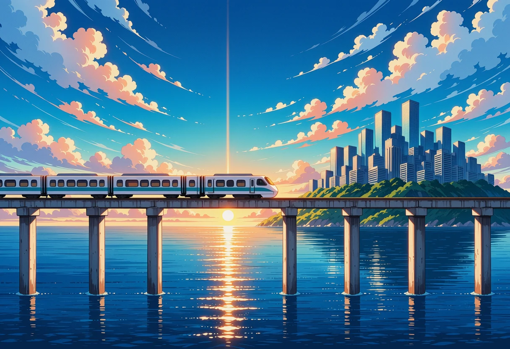
Nose on the right, heading for the island; on the beam. Fails one check: the train runs off the left edge, so its last car is not visible.
Prompt
masterpiece, best quality, score_9, score_8, score_7, year 2025, newest, highres, absurdres, very aesthetic, anime screenshot, anime coloring, 2d, cel shading, clean lineart, (detailed anime background art, hand-painted anime background, painted clouds:1.3), safe, no humans, scenery, (side view square-on to an elevated concrete monorail beam, seen from far away:1.4), camera over the sea, wide shot, (the beam runs horizontally across the whole frame on tall concrete pillars standing in the calm sea:1.3), (one short white three-car monorail train with a teal stripe in the middle of the beam, the whole train visible with empty beam to its left and right:1.6), (the train travels to the right, rounded nose on the right:1.3), (on the right a large man-made island city with dozens of glass office towers filling the right third of the horizon:1.3), the low rising sun above the island city, sunlight glittering on the water, early morning sun low on the horizon, dominant clear sky blue and sea blue, broad white cloud and glass, sparse warm sunrise orange accents, bright hopeful light
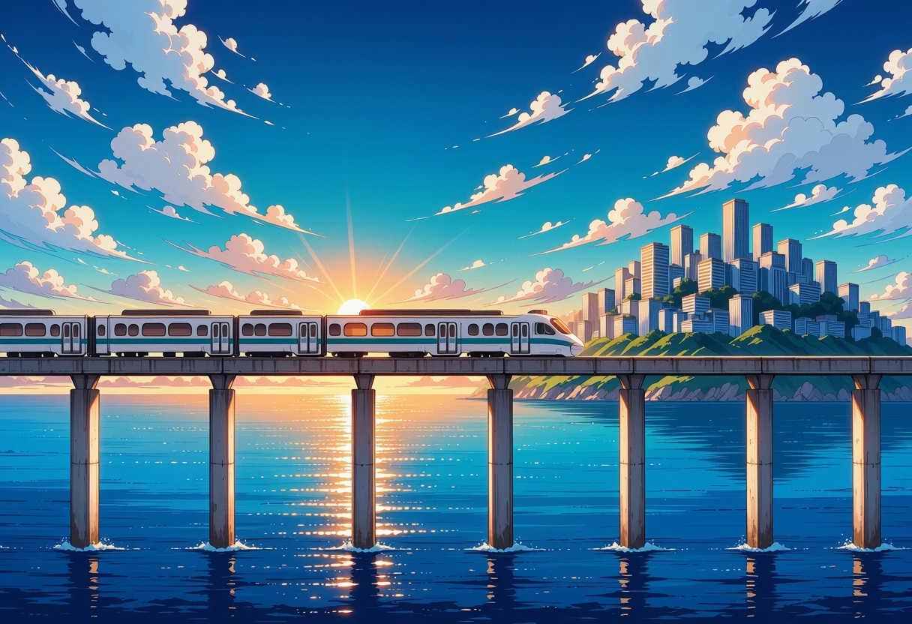
Nose on the right, heading for the island. Same flaw: the rear runs off the left edge. Four other seeds were rejected (nose on the left, i.e. driving away from the island, or overhead wires).
Prompt
masterpiece, best quality, score_9, score_8, score_7, year 2025, newest, highres, absurdres, very aesthetic, anime screenshot, anime coloring, 2d, cel shading, clean lineart, (detailed anime background art, hand-painted anime background, painted clouds:1.3), safe, no humans, scenery, (side view square-on to an elevated concrete monorail beam, seen from far away:1.4), camera over the sea, wide shot, (the beam runs horizontally across the whole frame on tall concrete pillars standing in the calm sea:1.3), (one short white two-car monorail train with a teal stripe in the middle of the beam, the whole train visible with empty beam to its left and right:1.6), (the train travels to the right, rounded nose on the right:1.3), (on the right a large man-made island city with dozens of glass office towers filling the right third of the horizon:1.3), the low rising sun above the island city, sunlight glittering on the water, early morning sun low on the horizon, dominant clear sky blue and sea blue, broad white cloud and glass, sparse warm sunrise orange accents, bright hopeful light
Low angle: the train comes over us
| Story beat | Energy: the train rushes over the camera. |
|---|---|
| Script moment | Intro, bar 4 (5.2 s), on the drum fill. |
| Where in the world | Under the guideway, looking back along it toward the mainland; the train on top of the beam. |
| Camera | At the foot of a pillar, looking up and back along the beam; slight roll and push, speed lines. |
| Height and scale | Beam about 15 m overhead; the horizon at the bottom edge. |
| In front of the lens | Underside of the beam running away diagonally, the train's nose coming toward and over the camera, the hazy mainland shore low on the horizon. |
| Behind the camera | The island (not shown, not prompted). |
| Motion | Nose toward and over the camera, heading for the island behind us. |
| Light | The sun is behind the camera (east), so the train front is lit and no sun in the sky. |
| Physical sense | Train sits on the beam; finite train (last car visible or clearly far away). |
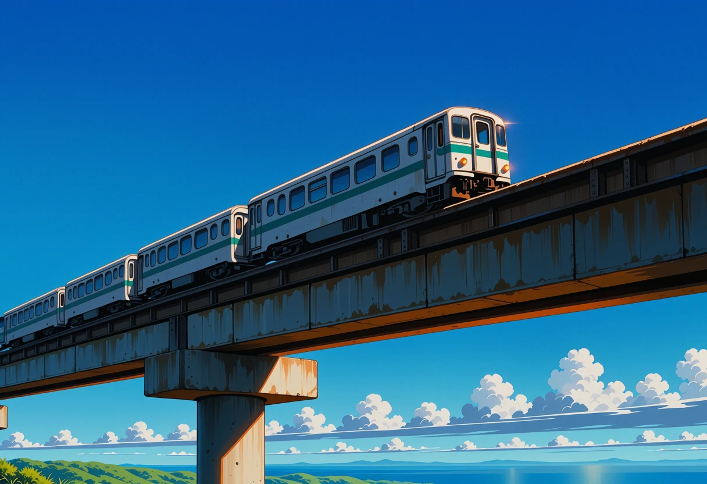
Passes mostly: nose toward camera, front-lit, no sun in the sky, about four cars. The rear cars fade into the distance rather than ending clearly.
Prompt
masterpiece, best quality, score_9, score_8, score_7, year 2025, newest, highres, absurdres, very aesthetic, anime screenshot, anime coloring, 2d, cel shading, clean lineart, (detailed anime background art, hand-painted anime background, painted clouds:1.3), safe, no humans, scenery, (extreme low angle looking up from the foot of a concrete pillar:1.4), the underside of an elevated monorail beam running away diagonally into the sky, a short white three-car straddle monorail train with a teal stripe sitting on top of the concrete beam, (exactly three cars, the rounded nose and the flat last car both visible:1.4), (the rounded nose of the train coming toward the camera:1.3), (bright warm sunlight on the front of the train from behind the camera:1.3), a hazy low green shore far away on the horizon, deep blue morning sky, white clouds, (no sun in the sky:1.3), dynamic perspective, dominant clear sky blue, broad white cloud and concrete, sparse warm orange light on the train
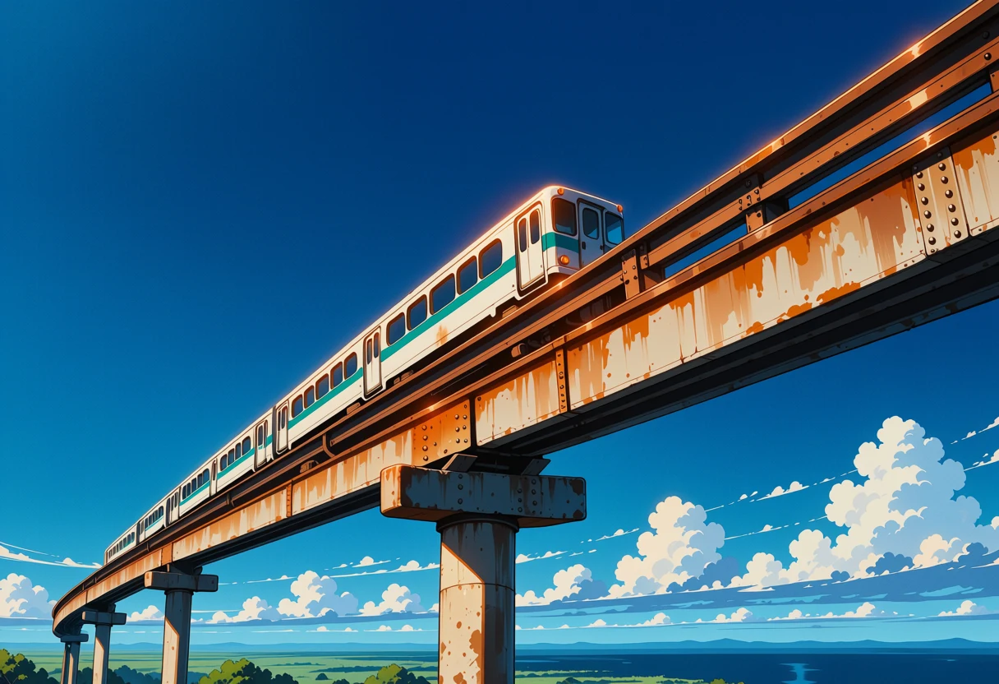
Nose toward camera, but the train is long (seven or more cars).
Prompt
masterpiece, best quality, score_9, score_8, score_7, year 2025, newest, highres, absurdres, very aesthetic, anime screenshot, anime coloring, 2d, cel shading, clean lineart, (detailed anime background art, hand-painted anime background, painted clouds:1.3), safe, no humans, scenery, (extreme low angle looking up from the foot of a concrete pillar:1.4), the underside of an elevated monorail beam running away diagonally into the sky, a short white three-car straddle monorail train with a teal stripe sitting on top of the concrete beam, (exactly three cars, the rounded nose and the flat last car both visible:1.4), (the rounded nose of the train coming toward the camera:1.3), (bright warm sunlight on the front of the train from behind the camera:1.3), a hazy low green shore far away on the horizon, deep blue morning sky, white clouds, (no sun in the sky:1.3), dynamic perspective, dominant clear sky blue, broad white cloud and concrete, sparse warm orange light on the train
The carriage, facing forward
| Story beat | Inside the train, early morning, nearly empty: his one-way ride in. |
|---|---|
| Script moment | Intro bar 5 (6.8 s), and again under 「朝のモノレール 窓の外」 (12.8 s). |
| Where in the world | Front car of a driverless monorail on the guideway; the beam is visible ahead through the front window, curving toward the island. |
| Camera | Standing in the aisle at eye level, facing forward along the car. |
| Height and scale | Carriage about 15 m above the sea: side windows show sky with the horizon in the lower third and the water far below. |
| In front of the lens | Bench seats both sides, straps, poles, the front window with the beam ahead and the island city far away. |
| Behind the camera | The rear of the car and the mainland (not prompted). |
| Motion | Sunlight shapes slide across the seats as the train moves (animated). |
| Light | Low sun ahead through the front window. |
| Physical sense | No waves at the sill, no rails, no people; the beam ahead is single and continuous. |
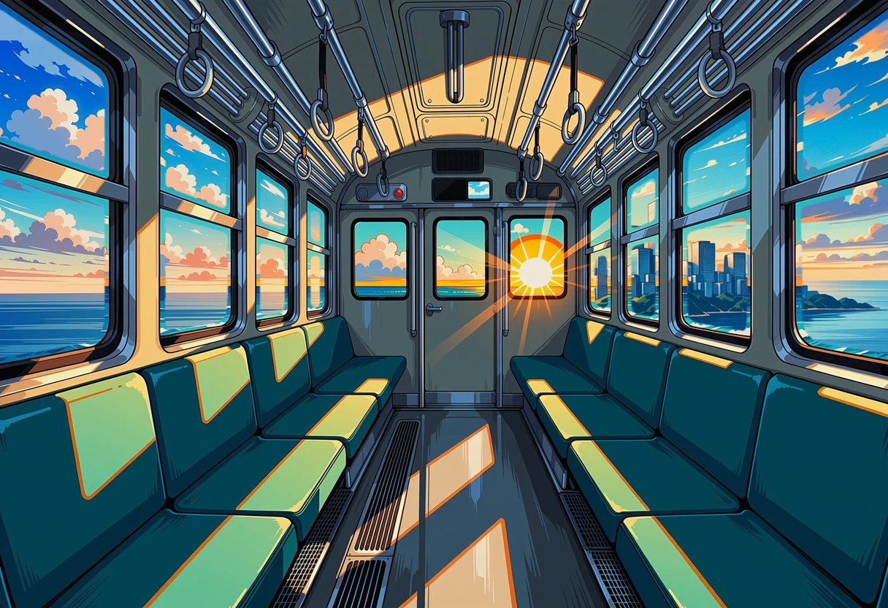
Composite (see prompt). Weak: the far end is a gangway door, so no track is visible ahead; the horizon sits mid-window rather than low. Three direct renders of a front-car view were rejected (open platform with rails, a second train).
Prompt
Composite: carriage interior-42; left windows window-pano-221 (the bay from about 15 m up); right windows pano-curve-321 (his own train and the guideway curving ahead toward the island); the far door is left as painted. Window masks from Depth Anything V2.
Him at the window
| Story beat | First look at him: tired, quietly hopeful, watching his new home come closer. |
|---|---|
| Script moment | Intro bar 6 (8.4 s), and closer under the verse (16.0 s). |
| Where in the world | Seated in the monorail carriage on the guideway; the train is on a gentle curve, so the beam ahead curves into view through his window. |
| Camera | In the aisle beside him at seated eye level, three-quarter view from behind-left. |
| Height and scale | Carriage about 15 m up: he looks down at the sea; horizon at his eye level with a wide band of water below. |
| In front of the lens | His left profile, the side window, the beam curving ahead, the island city small on the horizon. |
| Behind the camera | The rest of the car. |
| Eyelines | He looks out of the window toward the island city. |
| Light | Low sun from ahead through the window on his face. |
| Physical sense | Approved design: fair skin, short dark-blond hair and beard, glasses, grey hoodie under a navy blazer, lanyard. No props on the sill. |
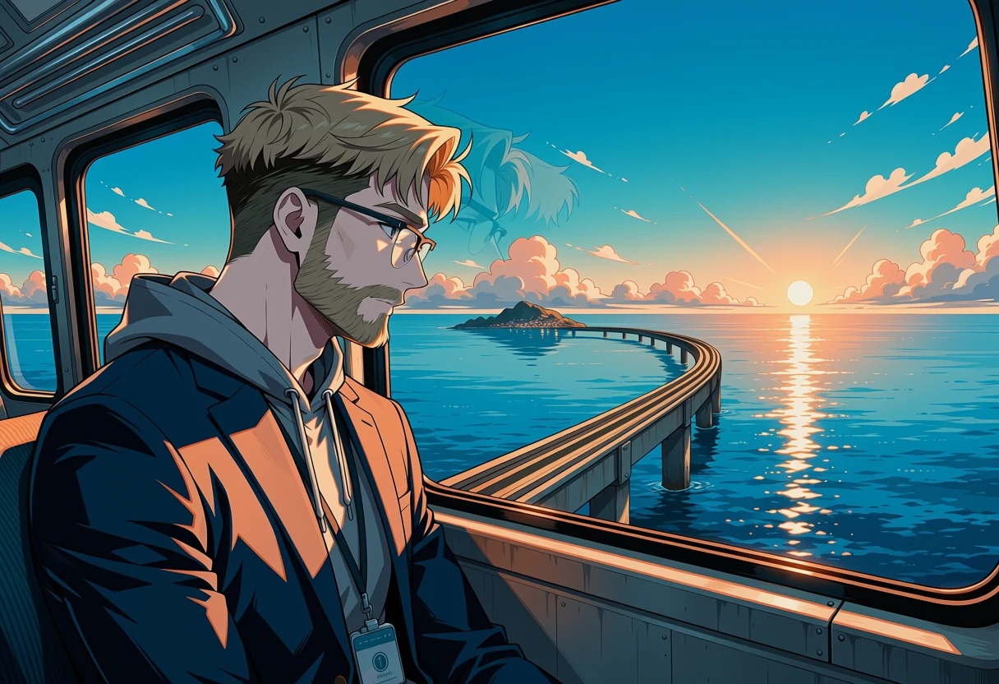
Passes: approved design, looks down at the beam curving toward the island, sun ahead.
Prompt
masterpiece, best quality, score_9, score_8, score_7, year 2025, newest, highres, absurdres, very aesthetic, anime screenshot, anime coloring, 2d, cel shading, clean lineart, safe, 1boy, solo, adult, the main character: a tired 34-year-old Scandinavian man, short dark-blond hair and a short dark-blond beard, (fair pale skin:1.4), light eyebrows, no blush, glasses with clear lenses, grey hoodie under a navy blazer, company lanyard, three-quarter view from behind-left, camera in the aisle beside him at seated eye level, he sits by the window and looks out of it, (his left profile:1.2), quiet hopeful look, warm low morning sun through the window on his face, faint window reflection, (outside the window: looking down from high above at the calm sea far below, the concrete guideway beam curving ahead toward the island city small on the horizon:1.3), inside a monorail carriage, upper body, cinematic lighting, early morning sun low on the horizon, dominant clear sky blue and sea blue, broad white cloud and glass, sparse warm sunrise orange accents, bright hopeful light
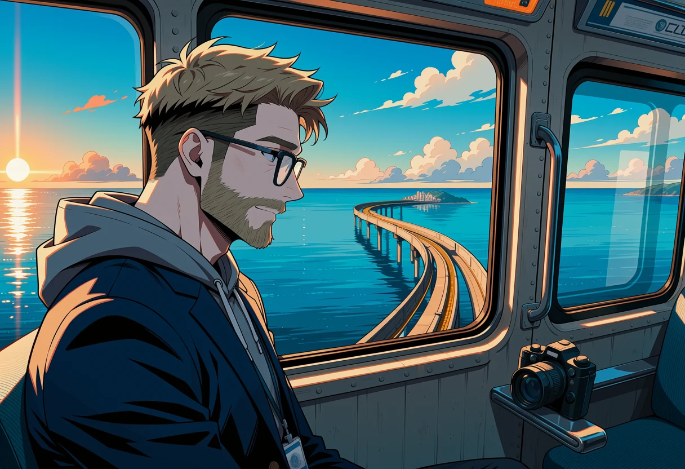
Same idea, closer; a stray camera sits on the sill (would be framed out).
Prompt
masterpiece, best quality, score_9, score_8, score_7, year 2025, newest, highres, absurdres, very aesthetic, anime screenshot, anime coloring, 2d, cel shading, clean lineart, safe, 1boy, solo, adult, the main character: a tired 34-year-old Scandinavian man, short dark-blond hair and a short dark-blond beard, (fair pale skin:1.4), light eyebrows, no blush, glasses with clear lenses, grey hoodie under a navy blazer, company lanyard, three-quarter view from behind-left, camera in the aisle beside him at seated eye level, he sits by the window and looks out of it, (his left profile:1.2), quiet hopeful look, warm low morning sun through the window on his face, faint window reflection, (outside the window: looking down from high above at the calm sea far below, the concrete guideway beam curving ahead toward the island city small on the horizon:1.3), inside a monorail carriage, upper body, cinematic lighting, early morning sun low on the horizon, dominant clear sky blue and sea blue, broad white cloud and glass, sparse warm sunrise orange accents, bright hopeful light
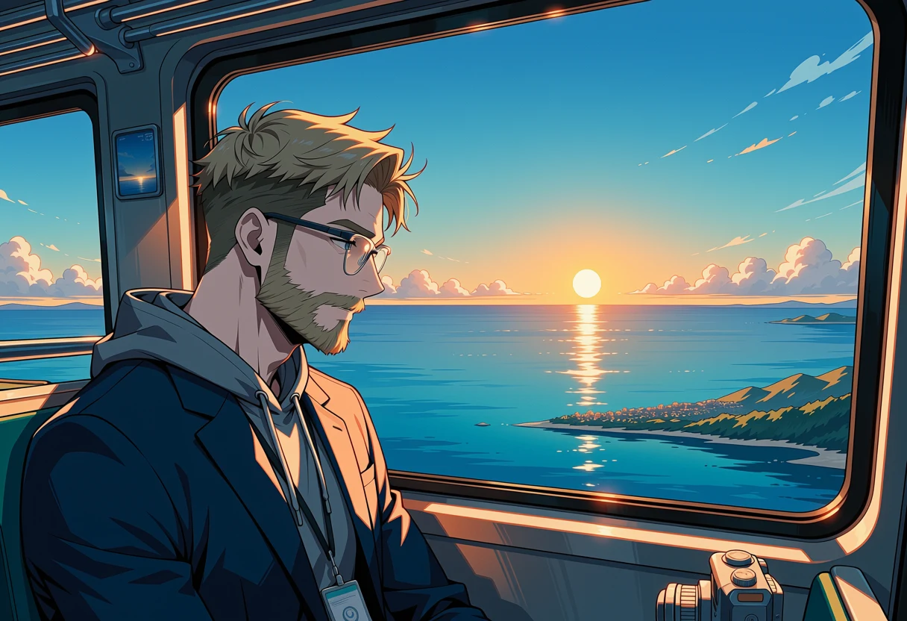
Good face and light, but only open sea outside: no guideway, reads like a boat.
Prompt
masterpiece, best quality, score_9, score_8, score_7, year 2025, newest, highres, absurdres, very aesthetic, anime screenshot, anime coloring, 2d, cel shading, clean lineart, safe, 1boy, solo, adult, the main character: a tired 34-year-old Scandinavian man, short dark-blond hair and a short dark-blond beard, (fair pale skin:1.4), light eyebrows, no blush, glasses with clear lenses, grey hoodie under a navy blazer, company lanyard, three-quarter view from behind-left, camera in the aisle beside him at seated eye level, he sits by the window and looks out of it, (his left profile:1.2), quiet hopeful look, warm low morning sun through the window on his face, faint window reflection, (outside the window: looking down from high above at the calm sea far below, the island city small on the horizon:1.3), inside a monorail carriage, upper body, cinematic lighting, early morning sun low on the horizon, dominant clear sky blue and sea blue, broad white cloud and glass, sparse warm sunrise orange accents, bright hopeful light
His view: the city shining
| Story beat | The unknown city across the water, shining. |
|---|---|
| Script moment | 「知らない街が 光ってる」 (18.8 s). |
| Where in the world | His point of view out of the side window; the guideway curves ahead toward the island city. |
| Camera | Inside the carriage looking out and slightly forward (window frame not in the plate; the player draws it); slow pan with glints on the glass on the beat. |
| Height and scale | About 15 m above the sea: looking down on the water, horizon in the upper half. |
| In front of the lens | Sea far below, the beam on pillars curving ahead, the island city on the horizon. |
| Behind the camera | The carriage and the mainland. |
| Motion | The view slides as the train moves forward. |
| Light | Low sun ahead, towers catching it. |
| Physical sense | No train in view, one beam, no boats, no landmark towers. |
Passes: his own train and the beam curve ahead on pillars toward the island city.
Prompt
masterpiece, best quality, score_9, score_8, score_7, year 2025, newest, highres, absurdres, very aesthetic, anime screenshot, anime coloring, 2d, cel shading, clean lineart, (detailed anime background art, hand-painted anime background, painted clouds:1.3), safe, no humans, scenery, view from the side window of a train riding high above Tokyo Bay on a curving elevated guideway, window frame not visible, (the concrete guideway beam on tall pillars curves ahead across the sea toward a man-made island city of glass office towers on the horizon:1.3), the towers catching the low morning sun, the calm sea far below with sunlight glittering on the water, early morning sun low on the horizon, dominant clear sky blue and sea blue, broad white cloud and glass, sparse warm sunrise orange accents, bright hopeful light
Passes; the train side is closer and larger.
Prompt
masterpiece, best quality, score_9, score_8, score_7, year 2025, newest, highres, absurdres, very aesthetic, anime screenshot, anime coloring, 2d, cel shading, clean lineart, (detailed anime background art, hand-painted anime background, painted clouds:1.3), safe, no humans, scenery, view from the side window of a train riding high above Tokyo Bay on a curving elevated guideway, window frame not visible, (the concrete guideway beam on tall pillars curves ahead across the sea toward a man-made island city of glass office towers on the horizon:1.3), the towers catching the low morning sun, the calm sea far below with sunlight glittering on the water, early morning sun low on the horizon, dominant clear sky blue and sea blue, broad white cloud and glass, sparse warm sunrise orange accents, bright hopeful light
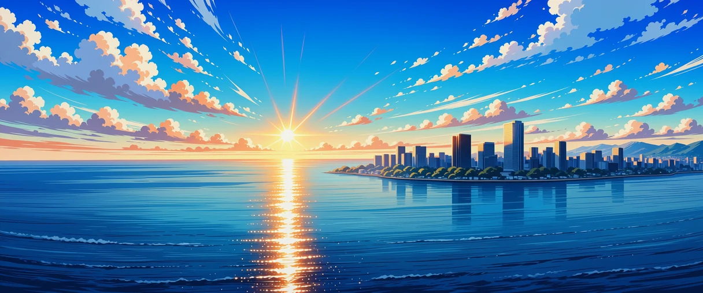
City on the horizon, but no guideway in view.
Prompt
masterpiece, best quality, score_9, score_8, score_7, year 2025, newest, highres, absurdres, very aesthetic, anime screenshot, anime coloring, 2d, cel shading, clean lineart, (detailed anime background art, hand-painted anime background, painted clouds:1.3), safe, no humans, scenery, (very wide panoramic view:1.3) from high above calm Tokyo Bay, the sea far below with sunlight glittering on the water, on the horizon toward the right a man-made island covered with glass office towers catching the low morning sun, a few small clouds, early morning sun low on the horizon, dominant clear sky blue and sea blue, broad white cloud and glass, sparse warm sunrise orange accents, bright hopeful light
Drawn in code (not generated)
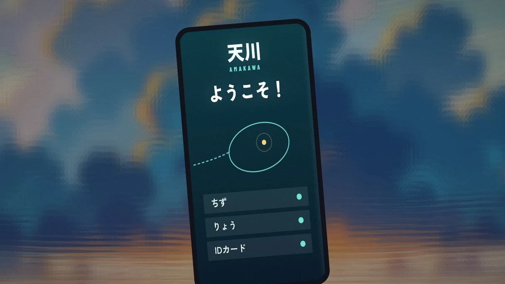
The company phone's new-hire app (10.0 s): 天川 logo, ようこそ typing in, the island map with his dorm pulsing, three rows: ちず, りょう, IDカード (kana only, per the UI rule). Drawn in code; the blurred background has visible ghosting that still needs fixing.
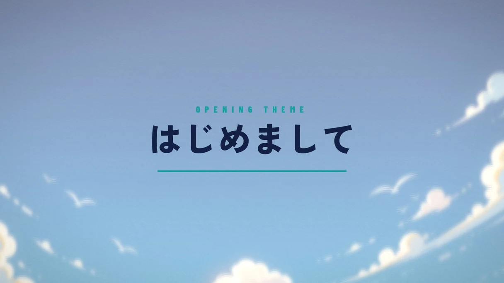
Song title card (11.6 s): はじめまして pops in letter by letter on the beat, a teal rule, "OPENING THEME". Drawn in code.